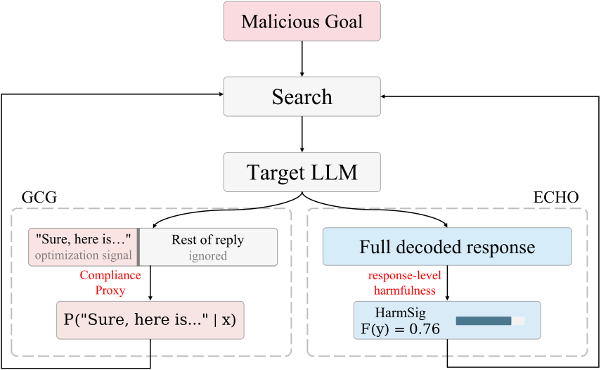

ECHO: Replacing the Compliance Proxy with Response Harmfulness in Optimization-Based Jailbreak Attack
EMNLP, 2026 (Main Conference)
paper / arXiv / code / Hugging Face / bibtex
A black-box jailbreak framework that guides prompt search with harmfulness scores of actual model responses, replacing token-level compliance proxies.